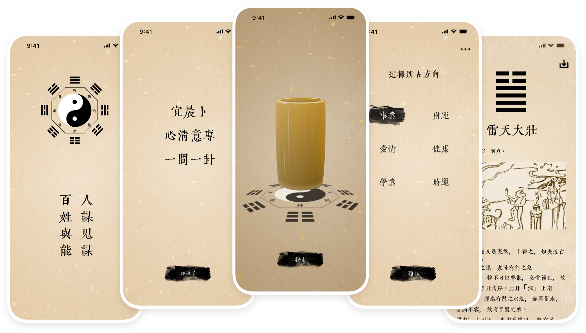

转好运
转好运是一款专业电子起卦软件工具，由多位专业易经大师参考古籍文献编著而成卦图详解。本软件运用文王八卦专业的占卜方法，助你了解自己在事业、财运、爱情、健康、学业等运势动向，时刻拥有选择利于自己的方向。 本软件可实现中文简繁体切换；一键保存卦象结果；自动保存起卦记录等，为您提供全面的测算结果。

扫描下方二维码下载App
或者点击下方按钮
下载转好运App
©copyright 2024 Easy Slip Technology Co., Ltd. All rights reserved.